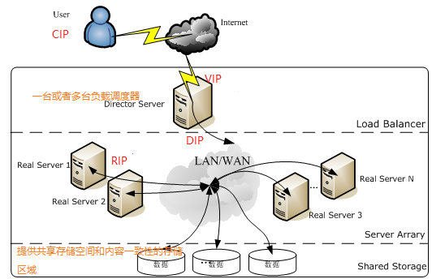
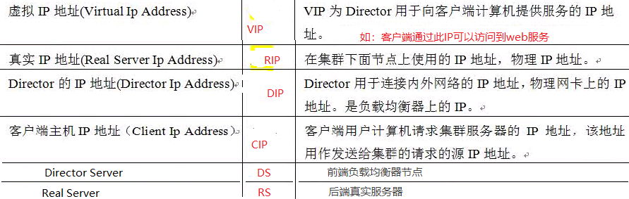
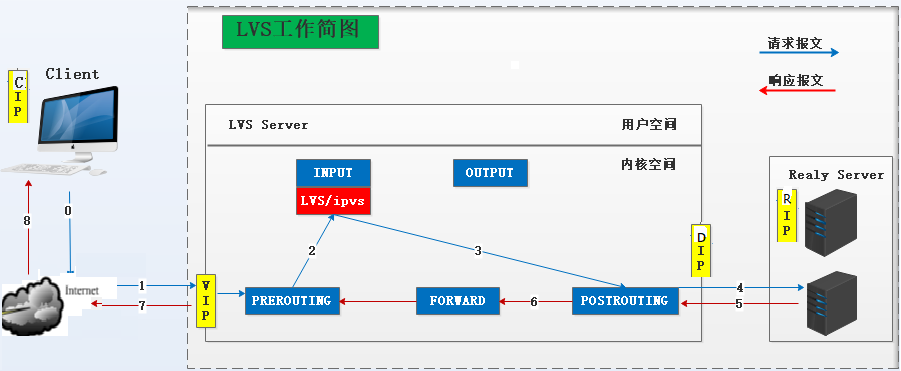
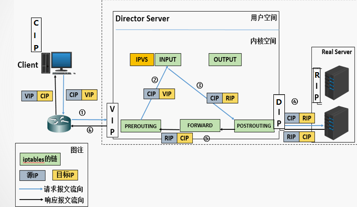
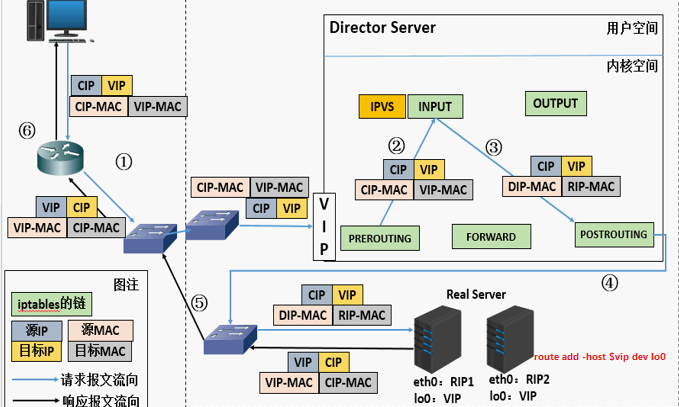
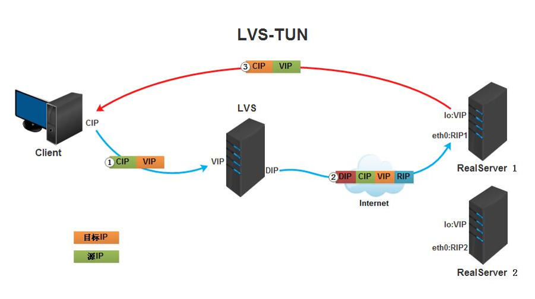
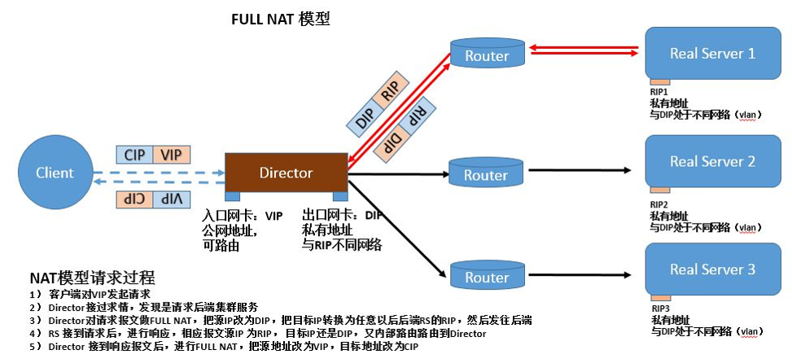
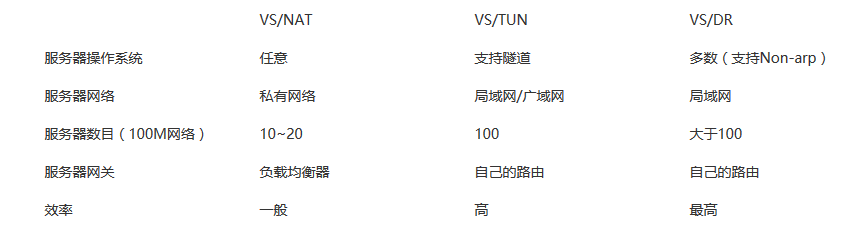

LVS
LVS是Linux Virtual Server的简称，也就是Linux虚拟服务器。
是国人章文嵩博士发起的一个开源项目，它是一款四层负载均衡软件
从 Linux2.4内核以后，已经完全内置了LVS的各个功能模块，无需给内核打任何补丁，可以直接使用 LVS 提供的各种功能。
体系架构


工作组成及原理
LVS由两部分组成，包括ipvs和ipvsadm
ipvsadm：用户空间的命令行工具，规则管理器，用于管理集群服务及相关的RealServer
ipvs：工作于内核空间的netfilter的INPUT钩子之上的框架
工作原理：
根据请求报文的目标IP和目标协议及端口将其调度转发至某RealServer，根据调度算法来挑选RS；
LVS是工作在linux内核空间的tcp/ip栈的应用程序，其程序名称为ipvs，
ipvs会监听input链上的请求，一旦请求的是集群服务的话，ipvs钩子函数会将请求拉出并进行报文修改，强制转发到postrouting处理
在客户端看来
负载层的LVS就是一个真实的应用服务器，客户端向LVS发送请求信息，LVS接收数据报文至内核空间，
工作在input链上的ipvs模块会判断用户请求是不是定义的后端服务器，
如果用户请求的就是定义的后端集群服务，数据报文传送到input链上时，input链会强行将数据报文转发给postrouting，
postrouting将数据报文传送给后端真实服务器

调度算法
ipvs scheduler:根据其调度时是否考虑各RS当前的负载状态
静态方法：仅根据算法本身进行调度；
RR：roundrobin，轮询；
它将请求依次分配给不同的节点，各个节点均摊分配。这种算法简单，但只适合各个节点处理性能差不多的情况
WRR：Weighted RR，加权轮询；
它将依据不同节点的权值分配任务。权值较高的节点将优先获得任务，并且分配到的连接数将比权值低的节点更多。相同权值的节点得到相同数目的连接数
SH：Source Hashing，实现session sticky，
源IP地址hash；将来自于同一个IP地址的请求始终发往第一次挑中的RS，从而实现会话绑定；
DH：Destination Hashing；目标地址哈希，
将发往同一个目标地址的请求始终转发至第一次挑中的RS，典型使用场景是正向代理缓存场景中的负载均衡；
动态方法：主要根据每RS当前的负载状态及调度算法进行调度,Overhead=value较小的RS将被调度
LC 最小连接调度：least connections
Overhead=activeconns*256+inactiveconns
IPVS表存储了所有活动的连接。Lvs服务器会比较将连接请求发送到当前连接最少的节点。
WLC 加权最小连接调度：Weighted LC ,默认调度方法
Overhead=(activeconns*256+inactiveconns)/weight
在节点性能差异较大的时候，可以为节点自动调整权重，权重较高的节点承担更大比例的连接。
SED 最短预期延时调度：Shortest Expection Delay
Overhead=(activeconns+1)*256/weight
NQ 不排队调度：Never Queue
LBLC 基于局部性的最少连接调度：Locality-Based LC，动态的DH算法；
调度算法是针对目标IP地址的负载均衡，目前主要用于Cache集群系统。
该算法根据请求的目标IP地址找出该目标IP地址最近使用的服务器，
若该服务器 是可用的且没有超载，将请求发送到该服务器；
若服务器不存在，或者该服务器超载且有服务器处于一半的工作负载，则用”最少链接”的原则选出一个可用的服务 器，将请求发送到该服务器
LBLCR 带复制的基于局部性的最少连接调度 ：LBLC with Replication，带复制功能的LBLC；
维护从一个 目标IP地址到一组服务器的映射
根据请求的目标IP地址找出该目标IP地址对应的服务器组，按”最小连接”原则从服务器组中选出一台服务器
若服务器没有超载，将请求发送到该服务器，若服务器超载；
则按”最小连接”原则从这个集群中选出一台服务器，将该服务器加入到服务器组中，将请求发送到该服务器。
同时，当该服务器组有一段时间没有被修改，将最忙的服务器从服务器组中删除，以降低复制的程度
工作模式
lvs-nat：
多目标IP的DNAT，通过将请求报文中的目标地址和目标端口修改为某挑出的RS的RIP和PORT实现转发；
1.RIP和DIP必须在同一个IP网络，且应该使用私网地址；RS的网关要指向DIP；
2.请求报文和响应报文都必须经由Director转发；Director易于成为系统瓶颈；
3.支持端口映射，可修改请求报文的目标PORT；
4.vs必须是Linux系统，rs可以是任意系统；

1)当用户请求到达DS，此时请求的数据报文会先到内核空间的PREROUTING链。此时报文的源IP为CIP，目标IP为VIP 。
2) PREROUTING检查发现数据包的目标IP是本机，将数据包送至INPUT链。
3) IPVS比对数据包请求的服务是否为集群服务，若是，修改数据包的目标IP地址为后端服务器IP，然后将数据包发至POSTROUTING链。 此时报文的源IP为CIP，目标IP为RIP
4) POSTROUTING链通过选路，将数据包发送给RS。
5) RS比对发现目标为自己的IP，开始构建响应报文发回给DS。此时报文的源IP为RIP，目标IP为CIP 。
6) DS在响应客户端前，此时会将源IP地址修改为自己的VIP地址，然后响应给客户端。此时报文的源IP为VIP，目标IP为CIP
lvs-nat设计要点：
(1)RIP与DIP在同一IP网络, RIP的网关要指向DIP
(2)支持端口映射
(3)Director要打开核心转发功能
lvs-dr：
Direct Routing，直接路由；操纵封装新的MAC地址
通过为请求报文重新封装一个MAC首部进行转发，源MAC是DIP所在的接口的MAC，目标MAC是某挑选出的RS的RIP所在接口的MAC地址；源IP/PORT，以及目标IP/PORT均保持不变；
Director和各RS都得配置使用VIP；
1.确保前端路由器将目标IP为VIP的请求报文发往Director：
主机上均需要配置VIP，解决地址冲突的方式有三种
(1) 在前端网关做静态绑定；
(2) 在各RS使用arptables；
arptables -A IN -d $VIP -j DROP
arptables -A OUT -s $VIP -j mangle --mangle-ip-s $RIP
(3) 在各RS修改内核参数，来限制arp响应和通告的级别；
/proc/sys/net/ipv4/conf/all/
/proc/sys/net/ipv4/conf/lo/
限制响应级别：arp_ignore
0：默认值，表示可使用本地任意接口上配置的任意地址进行响应；
1: 仅在请求的目标IP配置在本地主机的接收到请求报文接口上时，才给予响应；
限制通告级别：arp_announce
0：默认值，把本机上的所有接口的所有信息向每个接口上的网络进行通告
1：尽量避免向非直接连接网络进行通告；
2：必须避免向非本网络通告
2.RS的RIP可以使用私网地址，也可以是公网地址；RIP与DIP在同一IP网络；RIP的网关不能指向DIP，以确保响应报文不会经由Director；
3.RS跟Director要在同一个物理网络；
4.请求报文要经由Director，但响应不能经由Director，而是由RS直接发往Client；
5.不支持端口映射,不支持地址转换

1)当用户请求到达DS，此时请求的数据报文会先到内核空间的PREROUTING链。
此时报文的源IP为CIP，目标IP为VIP
2) PREROUTING检查发现数据包的目标IP是本机，将数据包送至INPUT链
3) IPVS比对数据包请求的服务是否为集群服务，若是，将请求报文中的源MAC地址修改为DIP的MAC地址，将目标MAC地址修改RIP的MAC地址，然后将数据包发至POSTROUTING链。
此时的源IP和目的IP均未修改，仅修改了源MAC地址为DIP的MAC地址，目标MAC地址为RIP的MAC地址
4) 由于DS和RS在同一个网络中，所以是通过二层来传输。POSTROUTING链检查目标MAC地址为RIP的MAC地址，那么此时数据包将会发至RS。
5)client的请求被Director转发并经过链路层寻址到达RS后，由于RS的lo接口配置了VIP(请求中的目标IP正是VIP)，所以接收请求并处理。处理完成之后，
将响应报文通过lo接口传送给eth0网卡（这个网卡一般指和调度器在一个网段的网卡）然后向外发出。此时的源IP地址为VIP，目标IP为CIP
为什么要抑制ARP请求?
1.由于后端RS要将VIP绑定到lo网卡上,这就出现了一个问题,客户端请求到达LVS前端路由器的时候,前端路由器会发送一个{目标地址为VIP}的请求报文,所以需要抑制RS的ARP,保证让DS收到这个报文,而不是RS收到这个报文
2.抑制RS原因:保证前端路由将目标地址为VIP的报文发给DS,而不是RS
lvs-tun：
转发方式：不修改请求报文的IP首部（源IP为CIP，目标IP为VIP），而是在原IP报文之外再封装一个IP首部（源IP是DIP，目标IP是RIP），将报文发往挑选出的目标RS；RS直接响应给客户端（源IP是VIP，目标IP是CIP）；
1.DIP, VIP, RIP都应该是公网地址；
2.RS的网关不能，也不可能指向DIP；
3.请求报文要经由Director，但响应不能经由Director；
4.不支持端口映射；
5.RS的OS得支持隧道功能；

1).客户端将请求发往DS，此时请求的数据报文会先到内核空间的PREROUTING链。 此时报文的源IP为CIP，目标IP为VIP
2)PREROUTING检查发现数据包的目标IP是本机，将数据包送至INPUT链
3)负载均衡器收到报文后，发现请求的是在规则里面存在的地址，那么它将在客户端请求报文的首部再封装一层IP报文,将源地址改为DIP，目标地址改为RIP,并将此包发送给RS。
4)RS收到请求报文后，会首先拆开第一层封装,然后发现里面还有一层IP首部的目标地址是自己lo接口上的VIP，所以会处理次请求报文，
并将响应报文通过lo接口送给eth0网卡（这个网卡一般指和调度器在一个网段的网卡）直接发送给客户端。此时的源IP地址为VIP，目标IP为CIP
注意：需要设置lo接口的VIP不能在共网上出现。
lvs-fullnat：
通过同时修改请求报文的源IP地址和目标IP地址进行转发；
CIP <--> DIP
VIP <--> RIP
1.VIP是公网地址，RIP和DIP是私网地址，且通常不在同一IP网络；因此，RIP的网关一般不会指向DIP；
2.RS收到的请求报文源地址是DIP，因此，只能响应给DIP；但Director还要将其发往Client
3.请求和响应报文都经由Director；
4.支持端口映射；
注意：此类型默认不支持；需要打补丁

区别

lvs-nat, lvs-fullnat：请求和响应报文都经由Director；
lvs-nat：RIP的网关要指向DIP；
lvs-fullnat：RIP和DIP未必在同一IP网络，但要能通信；
lvs-dr, lvs-tun：请求报文要经由Director，但响应报文由RS直接发往Client；
lvs-dr：通过封装新的MAC首部实现，通过MAC网络转发；
lvs-tun：通过在原IP报文之外封装新的IP首部实现转发，支持远距离通信；
ipvsadm
ipvsadm/ipvs：
集群和集群之上的各RS是分开管理的；
集群服务定义
服务上的RS定义
ipvs：
grep -i -C 10 "ipvs" /boot/config-VERSION-RELEASE.x86_64
支持的协议：TCP， UDP， AH， ESP， AH_ESP, SCTP；
ipvsadm 命令用于管理集群服务 LVS
ipvsadm：
程序包：ipvsadm
Unit File: ipvsadm.service
主程序：/usr/sbin/ipvsadm
规则保存工具：/usr/sbin/ipvsadm-save
规则重载工具：/usr/sbin/ipvsadm-restore
配置文件：/etc/sysconfig/ipvsadm-config
ipvsadm命令：
核心功能：
集群服务管理：增、删、改
集群服务的RS管理：增、删、改
查看
管理集群服务：
增、改：
ipvsadm -A|E -t|u|f vip_addr:port [-s scheduler] [-p [timeout]]
删：
ipvsadm -D -t|u|f vip_addr:port
管理集群上的RS：
增、改：
ipvsadm -a|e -t|u|f vip_addr:port -r rip[:port] [-g|i|m] [-w weight]
删：
ipvsadm -d -t|u|f vip_addr:port -r rip[:port]
查看：
ipvsadm -L|l [options]
--numeric, -n：以数字形式显示IP端口
--exact：expand numbers (display exact values)
--connection， -c：显示ipvs中目前存在的连接，也可以用于分析调度情况
--stats：显示历史转发消息统计（累加值）
--rate ：显示转发速率信息（瞬时值）
--timeout ：显示配置的tcp/tcpfin/udp超时时间
-s:指定集群的调度算法，默认为wlc
-A:添加
-t:TCP协议
-u:UDP协议
-f:防火墙标记 ,是一个数字
-D:删除虚拟服务器记录
-E:修改虚拟服务器记录
-C:清空所有记录
-L:查看
-a:添加
-t:TCP协议
-u:UDP协议
-f:防火墙标记
-r:指定后端realserver的IP
-g:DR模式
-i:TUN模式
-m:NAT模式
-w:指定权重
-d:删除realserver记录
-e:修改realserver记录
-l:查看
保存：可以保存至 /etc/sysconfig/ipvsadm
ipvsadm -S = ipvsadm-save
systemctl stop ipvsadm.service
ipvsadm -S > 规则文件路径
重载保存的规则
ipvsadm -R < /PATH/FILE
ipvsadm-restore < /PATH/FILE
systemctl restart ipvsadm.service
FireWall Mark
FWM：FireWall Mark
一个集群服务(lvs-dr调度web server)可以将两个服务(如80/443/22等)绑定在一起调度
MARK target 可用于给特定的报文打标记
--set-mark value 其中：value 可为0xffff格式，表示十六进制数字
借助于防火墙标记来分类报文，而后基于标记定义集群服务；可将多个不同的应用使用同一个集群服务进行调度
实现方法：
1.在Director主机打标记：
iptables -t mangle -A PREROUTING -d $vip -p $proto –m multiport -dports $port1,$port2,… -j MARK --set-mark NUMBER
$vip是LVS的VIP地址，$dport是要访问本地的端口，$num是防火墙标记位。如果想让2个不同的端口当做同一个集群服务的话，这里的$num的值要一样。
2.在Director主机基于标记定义集群服务：
ipvsadm -A -f NUMBER [options]
例：
iptables -t mangle -A PREROUTING -d 10.1.0.5 -p tcp -m multiport --dports 80,443 -j MARK --set-mark 11
ipvsadm -A -f 11 -s rr
ipvsadm -a -t 192.168.80.100 -r 192.168.80.194 -g -w 1
ipvsadm -a -t 192.168.80.100 -r 192.168.80.220 -g -w 1
持久连接
session 绑定：对共享同一组RS的多个集群服务，需要统一进行绑定，lvs sh算法无法实现
持久连接（lvs persistence）模板：实现无论使用任何调度算法，在一段时间内（默认360s），能够实现将来自同一个地址的请求始终发往同一个RS
持久连接实现方式 :
1.每端口持久（PPC）：每个端口定义为一个集群服务，每集群服务单独调度
ipvsadm -E -t 192.168.7.250:80 -s rr -p 60
2.每防火墙标记持久（PFWMC）：基于防火墙标记定义集群服务；可实现将多个端口上的应用统一调度，即所谓的port Affinity
ipvsadm -A -f 10 -s wrr -p
3.每客户端持久（PCC）：基于0端口（表示所有服务）定义集群服务，即将客户端对所有应用的请求都调度至后端主机，必须定义为持久模式
ipvsadm -E -t 192.168.7.250:0 -s rr -p 60
ipvsadm -A|E -t|u|f service-address [-s scheduler] [-p [timeout]]
LVS高可用
用于监视和管理负载平衡虚拟服务器LVS集群中的RealServer服务器。
ldirectord通过定期请求一个已知的URL并检查响应是否包含预期的响应来监视RealServer服务器的健康状况。如果RealServer发生故障，则将此RS删除，一旦它恢复正常，它将被重新激活。
ldirectord配置文件
/etc/ha.d/ldirectord.cf 主配置文件
/usr/share/doc/ldirectord-3.9.6/ldirectord.cf 配置模版
/usr/lib/systemd/system/ldirectord.service 服务
/usr/sbin/ldirectord 主程序
/var/log/ldirectord.log 日志
/var/run/ldirectord.ldirectord.pid pid 文件
配置示例：
checktimeout=3 #检查超时(秒)
checkinterval=1 #检查间隔(秒)
fallback=127.0.0.1:80
autoreload=yes
logfile="/var/log/ldirectord.log"
quiescent=no #down时yes权重为0，no为删除
virtual=5 #指定VS的FWM或IP：port
real=172.16.0.7:80 gate 2 #RealServer,gate表示DR模型，后面为权重
real=172.16.0.8:80 gate 1
fallback=127.0.0.1:80 gate #sorry server,集群不可用时，指向备用服务器
service=http # 集群类型
scheduler=wrr # 调度算法
checktype=negotiate # 健康度检查方法，ping,
checkport=80
request="index.html" # 检测的页面文件
receive="CentOS" # 检查的页面字符
启动ldirectord
启动会自动创建集群规则，先把之前的规则清空
检测Mysql的范例
#Sample configuration for a MySQL virtual service.
virtual = 192.168.10.74:3306
real=sql01->sql03:3306 gate 10
fallback=127.0.0.1:3306
service=mysql
scheduler=wrr
#persistent=600
#netmask=255.255.255.255
protocol=tcp
checktype=negotiate
login="readuser"
passwd="genericpassword"
database="portal"
request="SELECT * FROM link"